From one more submission to a console built around how developers ship
What began as a request to let developers submit app binaries in parallel became a ground-up rethink of how app submission works in a major app marketplace’s developer console.
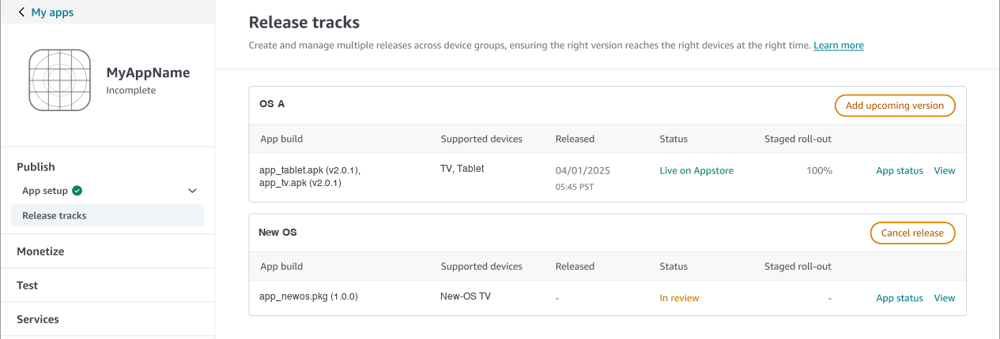
One version in review blocked every other submission, including test builds and builds for other platforms.
Treated parallel upload as an architecture problem, not a feature, and shipped the fix in three phases.
Review wait fell from about 7 days to about 2. Phases 1 and 2 shipped in Q2 2025; Phase 3 was in progress when I left.
Draft. Every fact comes from project documents, research materials, design screens and the project owner’s notes. Items tagged NEEDS INPUT are unknown and left open rather than invented.
Why this mattered now
The marketplace was preparing to support a new device running a new operating system, alongside its existing TV and tablet lines. For developers this meant yet another binary type: a package that could not run on the other devices, and vice versa.
Under the existing model, a developer who wanted to ship across device types had two options, and both were bad:
- Submit everything together. Every binary in one submission, with one set of metadata, released at the pace of the slowest platform.
- Stagger submissions. Wait for one binary to go live before starting the next, which could take a week or more each time.
A third workaround existed: use separate listings (separate product identifiers) per device. It does let developers move independently, but it breaks something customers rely on. In-app purchases made in one listing can’t be redeemed in the other unless the developer meticulously mirrors them.
The business stake
The project carried real weight. It was flagged as a blocker for the new device’s launch, with a target of Q2 2025, and the results were to be shared with senior leadership across the Appstore and developer-experience organisations. The research plan frames the risk of not doing the research as the highest level (“can’t move forward”), which is why a concept evaluation was scoped for the earliest stage.
My role
I was the lead designer for app submissions. I partnered closely with the research team to bring out the gaps in the current experience, and I helped shape the first draft of the research plan. I worked day to day with a PM (who authored the BRD), a TPM, a design manager, an engineering lead and their team, a QA lead with two testers, a researcher and the support team: roughly twelve people.
The project began when the PM brought requirements specifically for parallel binary submission. I held an initial discussion on the BRD with the PM and pulled the research team in early, so we could understand the problem in more depth before designing anything. Later, I took the research outcome to the PM and leadership and drove the decision to phase the work (see section 05).
My hands-on scope covered the flows, UI, prototypes and design-system work, through to full handoff. Once engineering built it, I ran visual QA, checking the build against the designs, and gave the sign-off. The reviewer-facing certification tool was a separate internal product and not part of my scope; my focus was the developer console. Engineering and support were brought in at the very start so their constraints shaped the work from the first discussions.
The people
The BRD defines three personas. They shaped how we prioritised the work, and each maps to a distinct pressure on the experience.
Sarah Chen
Manages a popular streaming service across TV, tablet and the new-OS TV, with separate codebases for each. A tablet review in progress delays TV and new-OS updates. Critical fixes wait on unrelated reviews, and release planning needs constant cross-team coordination. In some cases customer complaints grow during the delay.
Marcus Johnson
Runs a small studio making educational games for children. He tunes each game differently for tablet and TV, but limited resources force him to choose which platform to update first. Delays hurt revenue and make seasonal updates hard to coordinate.
Josh Brown
Reviews thousands of submissions a month. He struggles to track related submissions across platforms, has limited context about device- and OS-specific requirements, and carries a heavy communication load with developers. Parallel submissions needed to give him a clear view of what is in flight and a device-specific checklist, so certification gets more accurate rather than harder.
What the personas told us
Sarah and Marcus sit at opposite ends of scale, yet they share the same underlying need: release cadence should be set by the team’s capacity, not by the submission system’s constraints. Josh adds a third, easy-to-forget requirement: every control a developer gains creates new work for someone downstream. A solution that delighted developers but made certification chaotic would have failed.
Personas are those defined in the project BRD; names are fictional. Strategic partners were the research focus (see next section).
A console built for one version at a time
The request was straightforward on paper: let developers upload more than one binary at once. But when I mapped the end-to-end flow of the existing console against what the research said, the pattern was clear. The console’s model of an app submission was a single straight line:
Everything in that model assumed one live version at a time. Parallel upload could not be bolted on without breaking its assumptions:
- Where does metadata live? If two binaries in the same submission need different release notes and screenshots, a single metadata form no longer fits.
- What does “status” mean? A single status label can’t describe an app with three versions in three different states.
- What does rollout apply to? A percentage rollout of “the app” is meaningless if the app contains independent binaries.
- Where does testing fit? If testing is a step inside a production submission, it will always be blocked by that submission (Finding 4).
Each of these is an IA question, not a UI one. Solving them one by one on the old structure would have produced a patchwork. Solving them once, at the structural level, meant the same model would also fix Findings 4 and 5.
The old console, step by step
The old console asked developers to move through four steps in order: upload the app file, target the app, set the store settings, and review the information. Everything about a version, from the binary to the marketing content, lived inside that single sequence.
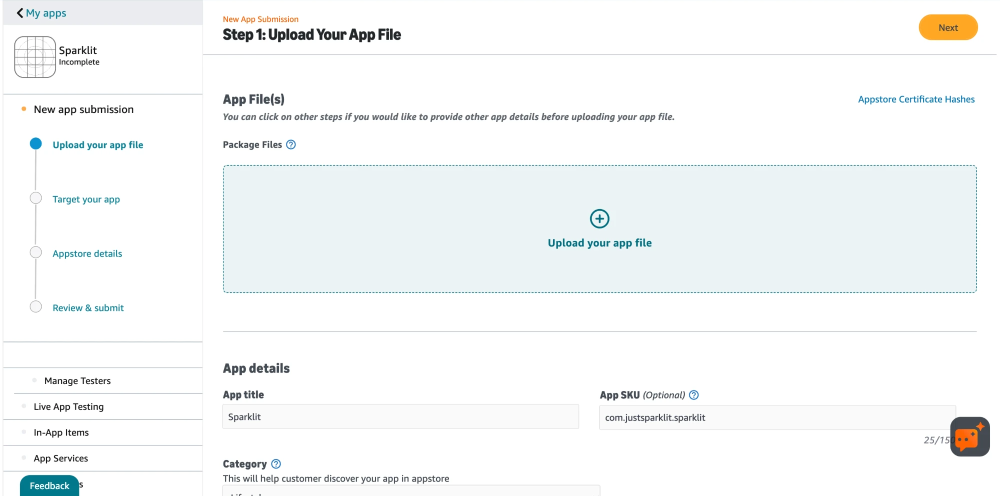
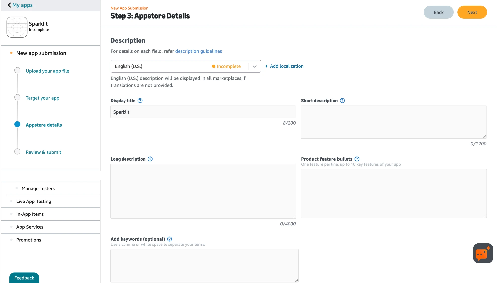
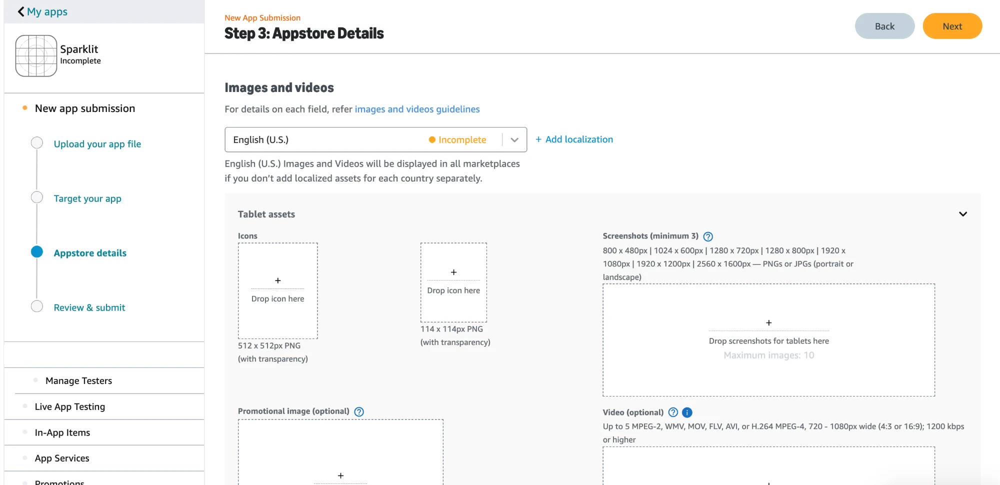
What the old screens show
Reading the old console screen by screen, six problems were visible before any research was needed. They are the structural reasons a one-line request for “parallel upload” could not be solved by adding a button.
- The step names don’t match their contents. “Upload your app file” also holds the app title, SKU, category, language support and customer-support contact. A developer looking for those details has no reason to look in an upload step.
- The flow says two opposite things. The page tells developers they can click other steps to provide details before uploading. Yet in the next step a warning blocks device selection until the app file is uploaded. The order is both optional and mandatory, depending on the field.
- “Target your app” mixes unrelated decisions. Supported devices, country availability, age audience, content rating and data privacy all sit in one step. Device targeting follows from the binary; the rest are compliance and audience choices about the app itself. They have different owners and change at different speeds.
- Everything about a version lives in one pass. Pricing by market, titles and descriptions, feature bullets, keywords and every device’s screenshots and icons are filled in one form, for one submission. That is why metadata could not differ between binaries.
- Testing, in-app items and promotions sit outside the flow. They appear as separate items in the sidebar, apart from the four steps, so a developer cannot see how they relate to the submission in progress. This matches the research finding that test builds were blocked by production review.
- Release decisions don’t appear in steps 1 to 3. Nothing on those screens asks when or how widely a version should go out. Timing and rollout were not part of the path a developer walked, which fits Finding 5: partners could not find staged rollout.
The four steps were organised by form sections, not by the decisions a developer actually makes. A developer thinks: “what is my app, and what am I releasing now?” The old console asked: “which form comes next?” Collapsing four steps into two, store details and production release, was an attempt to match that mental model.
The same flow, screen by screen
These are the “before” screens: the flow as it stood when the project began, shown screen by screen. Brand elements are removed and the data is sample data. Together they show how a developer moved from a first upload to a published app, and where the structure started to strain once more than one binary was involved.
Step 1 · Upload
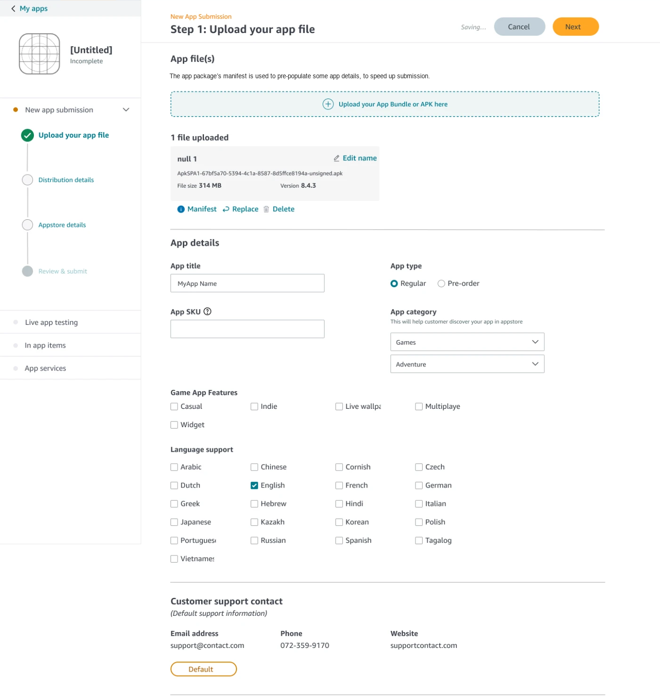
Upload and app details share one step. The package’s manifest pre-fills some fields, which saves typing, but a single upload slot assumes a single file for the whole submission.
Step 2 · Distribution details
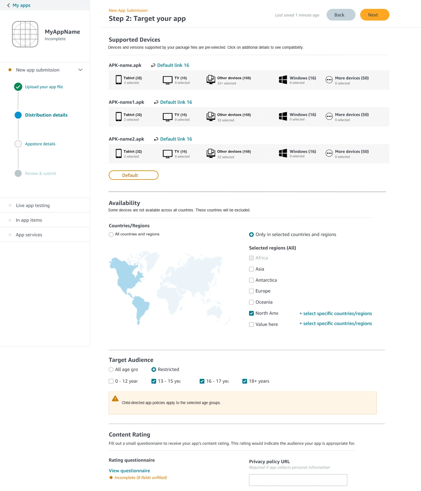
Device selection is already grouped per package, with a selected count for each device group. Availability, audience, content rating and the privacy URL all sit in the same step, so choices about devices, regions and compliance are made in one long page.
Step 3 · Store details
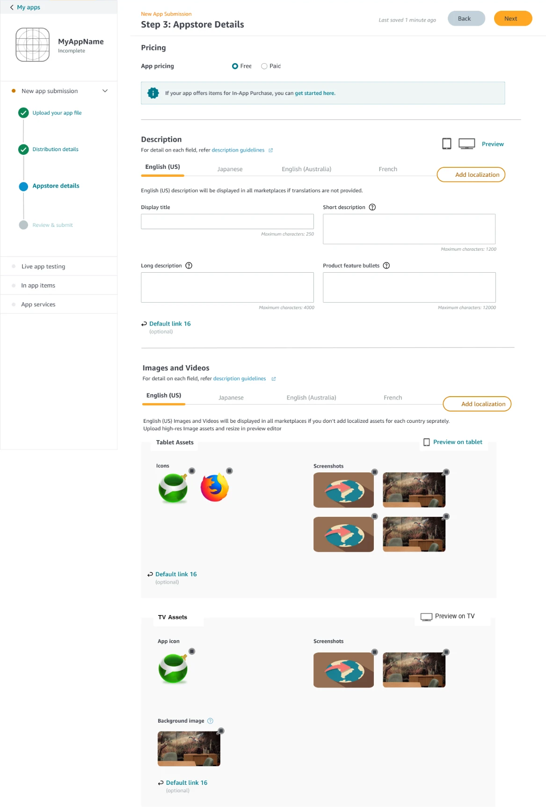
Store content is organised by language and by device type, with a preview for each device. It is rich and well-grouped, but it belongs to the same submission as the binary: change a screenshot, and you are inside the release flow.
Step 4 · Review and submit
Before · step 4, review and submit
Supplied inline, not saved as a file. Save it into the project folder and I will redact and place it.
The final step summarises the submission in three blocks (app details, targeting, a store preview), each with its own edit link. Below it, a short “Before you submit” area is where release timing first appears: an optional start date, time and timezone, testing instructions and the required compliance confirmations. There is no partial rollout anywhere in this flow.
After submitting · Status
Before · review submission status
Supplied inline, not saved as a file. Save it into the project folder and I will redact and place it.
After submission the stepper gains a fifth item, App submission status. The page shows a status label (“Under review”), a timeline of dated events with plain-language messages, and a contact form tied to the submission. It describes one submission only: there is no view of several in flight.
Updating an app · New version
Before · new version updates
Supplied inline, not saved as a file. Save it into the project folder and I will redact and place it.
Updating an existing app reuses the same four steps. The sidebar separates Current version, Live from Upcoming version, and the first step adds a release-notes field beside the upload. It is the clearest hint in the old console that a version is its own piece of work, yet a developer can still have only one upcoming version at a time.
Individually the screens are tidy: pre-filled details, grouped devices, previews, a status timeline. The problem was structural. Everything for one version, from the binary to the store listing to the release date, lived in a single four-step sequence, and only one version could move through it at a time. Release timing arrived last, and rollout was nowhere. That is where this project started.
What we learned, and from whom
I sat with the research team at the start to shape the study: the questions we needed answered, the structure of the research and the methodologies worth using. The researchers then wrote the questionnaires, we finalised them together, and the research team ran the study themselves.
The study ran for two weeks with seven strategic partners: the managed developers who account for a disproportionate share of the platform’s revenue. The study combined card sorting, interviews and survey questions. The partners were chosen deliberately because of that revenue weighting. A single problem for them can move the platform’s numbers more than any number of smaller developers combined.
What earlier research had already said
The partner study did not start from a blank page. Earlier developer research, four one-on-one interviews and a survey of 39 developers, had already measured how people felt about submission. The picture was mixed: 72% rated their satisfaction 4 or higher out of 5, and 23% rated it 3. Developers liked the simplicity of the submission UI itself. What they did not like was everything around it: slow review, vague rejections, and testing that waited on review.
Two threads from that research pointed straight at this project:
The first anticipated Finding 4: testing blocked by production review. The second anticipated the card-sort result: developers wanted a structure they already knew. Seeing both themes recur in the partner study gave me confidence they were real patterns rather than one-off complaints.
Research questions
- Do you submit different apps for TVs and tablets?
- Which submission features do you use most often when submitting an app?
- How useful are future release dates, staged rollout and a simple submission flow?
- The one thing we had to leave knowing: does the concept of parallel binary submission hold up?
Five findings
Findings 1–3 fit the original brief. Findings 4 and 5 did not: they had nothing to do with binaries or devices. They were about how releasing is modelled in the console. That mismatch is what made me stop treating this as a feature and start treating it as an architecture problem.
In developers’ words
A separate survey of about 130 developers, run by the research team, asked what they wanted from staged rollout. Their open-ended answers show why the feature matters, and why it is easy to underuse. Names are withheld; these are verbatim responses.
The same survey adds a counterweight. Many developers release on larger platforms first and treat that rollout as their safety check, so on this marketplace staged rollout was a lower priority for some. That is why the design goal was clarity rather than more controls: make the choice between a partial and a full release obvious, so developers who want it can find it.
What the card sort told us
The card sort showed how developers prefer information to be organised, and the answer was not a new mental model. Most partners were already familiar with how a competing platform’s console is structured and were comfortable in it. They wanted the marketplace’s console built around that familiar shape. That insight pulled the design toward conventions developers already knew, instead of an invented structure that would have to be learned.
Validating the first draft
Once the initial draft of the restructured flow was ready, it was walked through with the strategic partners. They found it more convenient and easier to use because it gave them the same kind of experience they already had elsewhere. The learning curve was lower than with the old console.
Beyond the strategic partners
The study focused on strategic partners because of their revenue weight, but the main features were not kept for them. They were rolled out to smaller developers too, who gained the same ability to handle multiple binaries for multiple operating systems.
From a feature to an information architecture
The brief I was handed was narrow: enable parallel binary submission. Research with the platform’s highest-revenue partners, and a hard look at how the console was organised, showed the narrow brief was a symptom. The deeper problem was the information architecture: submissions, metadata, testing, rollout and release were tangled into a single linear path that could only hold one version at a time.
The design principle I held to
Separate what is true of the app from what is true of a release. App-level information (region availability, data privacy, content rating) is set once and shared. Everything about a particular version, such as its binary, its device targets, its notes, its rollout and its date, belongs to a release lane of its own.
Taking it to the PM and leadership
The PM had arrived with a specific, scoped requirement: parallel binary submission. Once the research showed the problem was bigger, I took the findings back to the PM and the leadership team and made the case explicitly: this was not one blocked feature but a workflow whose architecture could not support what developers needed. Rather than asking for a larger single project, we agreed to break the work into three phases, so the launch blocker could still be unblocked first.
The pushback, and how it changed the plan
There was specific pushback on restructuring the information architecture. The concern was that doing it properly would need a large back-end change and would stretch the timeline. That objection was legitimate, and it shaped the approach. Instead of arguing for the full restructure at once, we split it: a lighter IA change for phase 2 that the existing back end could support, and the deeper IA shift held for the phase 3 redesign.
Three phases, in dependency order
Phasing was the decision that let the team be ambitious without risking the launch. Each phase had its own purpose and could stand on its own.
Why this order
Phase 1 solves the immediate business blocker with the smallest structural change that still works. Phase 2 makes sure that change sits on a coherent hierarchy rather than another layer of patches. Phase 3 only makes sense once the model underneath is settled, because a redesigned platform built on the old structure would just move the confusion around.
Status
Phases 1 and 2 shipped. Phase 3 was in progress when I left: the team was building a new design system and a new structure for the whole developer platform.
The model: the app, and its releases
Everything in the redesign follows from one split. The app holds what is true across every platform and version: its details, store listing, pricing and availability, and policies. Release tracks hold what changes: a lane per platform, each containing releases with their own build, devices, status and rollout.
How a developer moves through it
- Set up the app once. App setup gathers the app-level information in a single hub, in any order.
- Create a release track. At launch, one per operating system. In Phase 2, the developer chooses an OS and then device types, as a combined release or a track per device type.
- Create a release. Upload the app file and configure release details: a release name, notes and supported devices.
- Watch every lane at once. The release-tracks table shows each lane’s build, devices, release date, status and staged roll-out side by side.
A lane being live while another is in review is a normal state of the product, not an exception to the model.
The BRD described device-scoped tracks, up to three per app, with a status console listing each track. What shipped organised tracks by operating system and listed devices inside each release. The BRD’s richer model, device-level tracks with their own listings, is what Phase 2 delivered. I describe what the screens show, and treat the BRD as the direction they were moving in.
NEEDS INPUT — which BRD rules shipped at launch (version-code validation, exclusive device targeting, a cap on tracks)?
The reviewer, as a constraint
Parallel submissions multiply what a reviewer has to look at. The requirements for the certification side were:
- Visibility of how many tracks are active and which device types they target, so related work can be judged together.
- First-in, first-out processing across a developer’s tracks, so no track is starved.
- Results shared back to the developer with clear next steps. Existing mechanisms for strategic and tail developers carry over.
- Device- and OS-specific review checklists, so the reviewer’s attention goes where the risk is.
Keeping the reviewer in view kept the project honest. Giving developers more simultaneous submissions only works if the people on the other side can absorb them.
Scope note. The reviewer experience lived in a separate internal tool, and I did not design it. My focus was the developer console. The BRD’s certification requirements are included here because they were the context for my design: more parallel lanes only work if the review side can absorb them.
The decisions that shaped it
Each decision below is visible in the shipped or proposed screens. Where I don’t yet have the alternatives that were rejected, I have marked it.
1. Separate the app from its releases
The change. The four-step sequence (upload file, target, store settings, review) became two places: app and store details, and the release. In the navigation, App setup and Release tracks sit side by side under Publish.
Why. It separates marketing content from the release. Developers can change a release directly while the store content stays as it is, and the marketing team can change that content independently. A release no longer reopens everything, and a copy edit no longer rides along with a binary.
The constraint. Engineering pushed back on a full restructure because it would change the back end and extend the timeline. This was the lighter structural change that delivered the separation without that cost.
2. Group by the jobs developers do
The change. A persistent left navigation with four areas: Publish, Monetize, Test and Services. Testing and monetisation became peers of publishing, instead of items stranded beneath a four-step flow.
Why. The audit of the old console showed testing and in-app items sitting outside the path a developer walked, and the research showed test builds blocked by production review. Giving them their own place in the structure was the first step to unblocking them.
Also. The card sort pointed to a console structure developers already knew from a competitor. The grouping leans toward that familiarity.
3. Lanes by OS first, then by device
The change. At launch, tracks were organised per operating system. Phase 2 extends this: choose an OS, then choose device types, as a combined release or a track for each.
Why it matters. The launch problem was a new OS blocked behind an existing one, and an OS boundary is the cleanest line to draw: the packages are incompatible, so the lanes can never collide. Device-level tracks add finer control, but also more states to manage, so they came after.
4. Make rollout a column, not a feature
The change. Staged roll-out appears as a column in the release-tracks table, with a percentage for every release, next to status and release date.
Why. Partners could not find staged rollout. A separate setting would still have to be discovered; a column is seen every time a developer looks at their releases. A survey of developers added nuance: many treat rollout on larger stores as their safety check, so the goal was clarity, not extra controls.
5. Let a long form show where you are
The change (Phase 2). A section index on the right of App setup lists all nine sections, with field-level guidance and links to technical documentation.
Why. With store listings and regions now able to differ per track, the information a developer manages grows. The risk is a form so long nobody can find their place. The index turns a scroll into a map.
6. Make the track an object that owns things
The change (Phase 2). A track has a name that can be edited, a line stating the devices it covers, a summary, separate Releases and Store Listings tabs, and a release history. Its empty state offers two independent first steps: set up the store listing, and create the first release.
Why. At launch a track was only a lane for releases. The limitations showed what that missed: a listing per track, and a history to audit. Making the track own both is what the previous decisions were leading to.
Release controls
Release controls let developers choose an immediate publish, a fixed future release date, or manual publishing after approval. Partial or full rollout is chosen up front and shown as a column in the release-tracks table, so a developer sees at once whether a release is at 100% or still rolling out.
Testing without being blocked
The flow map gives testing its own route. A developer can choose what to test the build with (a developer-test option, or a physical device farm) and add testers manually or by upload. A test release no longer waits for production review (Finding 4). Production release setup stays locked until mandatory information is complete, which stops a developer from reaching the final step with gaps.
An onboarding path that isn’t a straight line
The user-flow map organises the first-time experience into four setup groups: app basics, monetisation, release track and release, with early dev testing in parallel. Monetisation can be skipped; payment details can be configured later; “Save and exit” is available. The map explicitly communicates that the journey is not linear, so developers aren’t made to feel they must finish everything in one sitting.
Anonymised, redrawn user-flow map
The original maps carry internal labels. I recommend redrawing them cleanly. Confirm and I will prepare them.
Three phases, shipped and in progress
I led design for the redesigned submission experience. Its central idea is the release track: an independent lane per platform, each with its own releases, devices, status and roll-out, running alongside the others instead of queuing behind them. Later phases extended lanes to device types and gave each track its own store listing.
Phase 1: what launched
Phase 1 launched parallel submission along with a simplified navigation around it. It had one job: stop one version from blocking another. Brand elements are removed from these screens and the data is sample data. Three moves did the work.
1 · Simplify the navigation
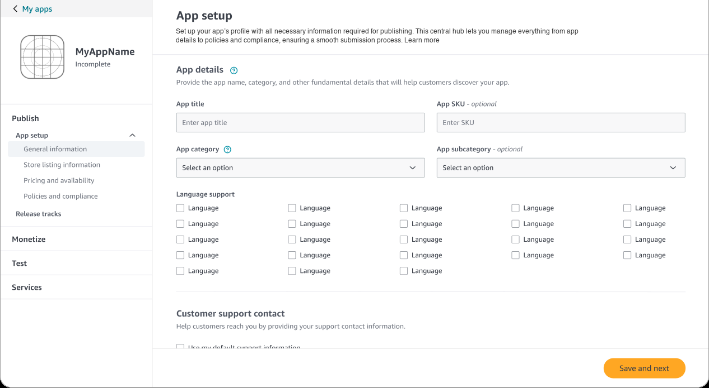
The old four-step sequence gives way to a persistent left navigation with four areas: Publish, Monetize, Test and Services. Under Publish, App setup groups the app-level material in four sections: general information, store listing, pricing and availability, and policies and compliance. Release tracks sits beside it.
This is the structural split from the research and the audit. What is true of the app is set up once, in a central hub a developer can revisit in any order. What is true of a version lives somewhere else. Testing and monetisation, previously stranded in the sidebar, become peers of publishing instead of footnotes to it.
2 · Give each platform its own lane
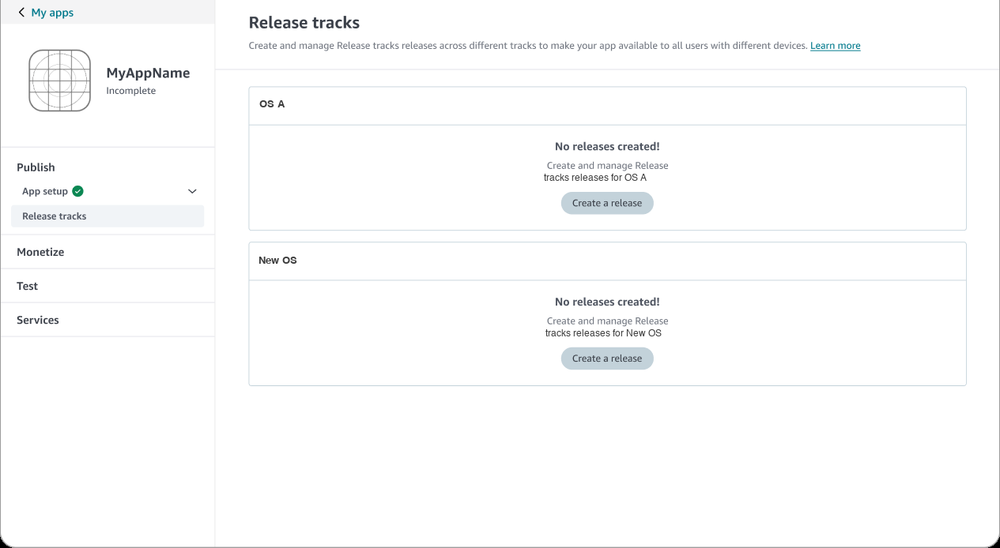
The Release tracks page shows one lane per operating system. Each lane starts with a clear empty state, No releases created, and its own Create a release action. Nothing about starting one platform’s release depends on the other, which is the whole point: the old “only one submission at a time” rule has no place to live in this layout.
3 · Manage upcoming versions side by side
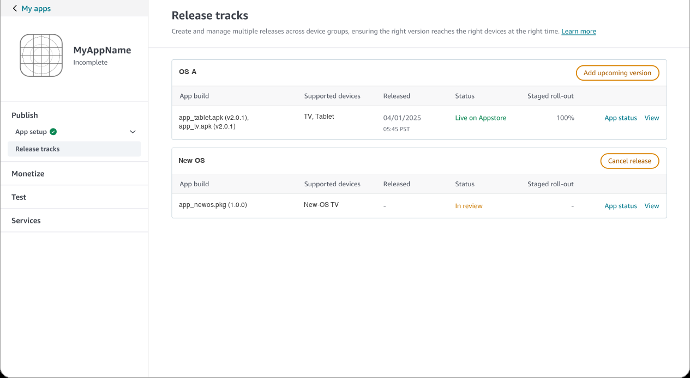
With releases in place, each lane becomes a small table: app build, supported devices, release date, status, staged roll-out, and links to the app status and the release itself. In the example, one lane is live at 100% while the other is in review, which was impossible under the old flow. Each lane has its own action, Add upcoming version or Cancel release, depending on its state.
The staged roll-out column matters too. Rollout was a hidden feature before; here it is a column in the table every developer reads when they look at their releases, with a percentage visible for every release.
4 · Build a release, with the system doing the checking
Creating a release is where the old flow’s contradictions were fixed. Three things stand out.
Dependencies are stated once, and visible
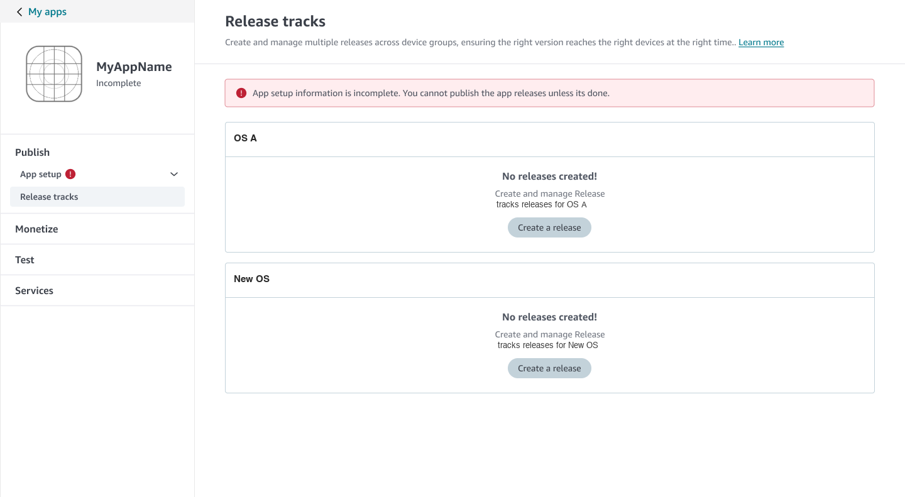
The old flow said steps were optional and mandatory at once. Here the rule is a single sentence, shown where it matters: App setup information is incomplete. You cannot publish the app releases unless it’s done. A developer can start a release lane, but submission waits on app setup. The App setup item in the navigation carries a red alert while it is incomplete and a green tick when it is done, so status is visible from anywhere.
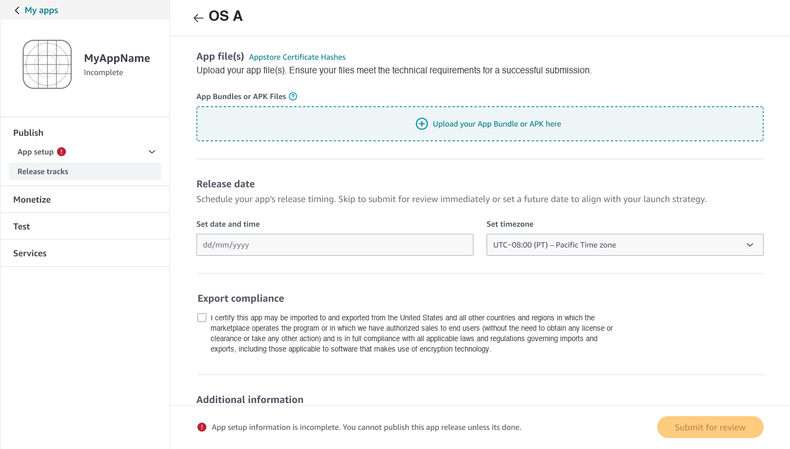
On the release page itself, Submit for review is disabled, and the reason sits beside it in the footer. A disabled button without an explanation is a dead end; this one says what to do.
Feedback happens in place
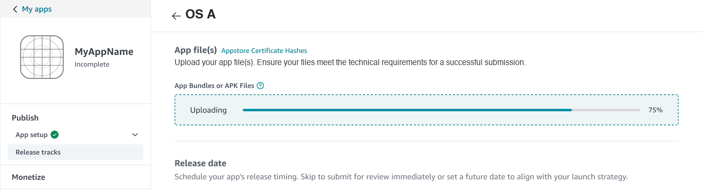
Uploading shows a progress bar inside the drop zone, at the spot where the developer’s attention already is.
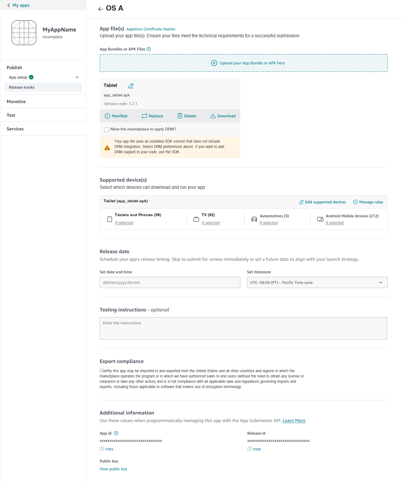
Once uploaded, the file becomes a card with an editable name, its version code and four actions: Manifest, Replace, Delete, Download. When the file uses an outdated SDK, a warning on the card explains what is missing and how to fix it, instead of surfacing as a rejection in review.
Devices are chosen per file
Under Supported devices, each file gets its own row, grouped by device family with a count of devices selected in each, and links to Edit supported devices and Manage rules. The edit view groups devices by family in tabs, with Select all and Deselect all, and warns that editing the pre-selected devices affects the target countries and regions already chosen. A developer sees the consequence of a choice before making it.
5 · Choose partial or full release at the moment of submission
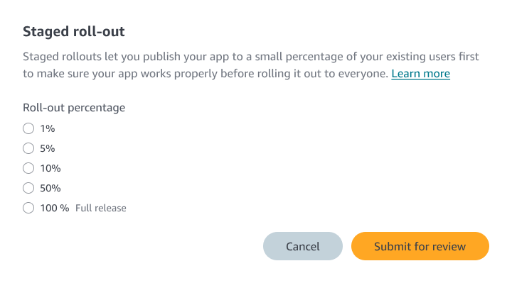
Submitting a release opens a short dialog. One sentence explains what a staged rollout is (publish to a small percentage of existing users first, to make sure the app works before rolling out to everyone), and the developer picks 1%, 5%, 10%, 50% or a full release. This is the decision Finding 5 said developers could not find: it now appears at the exact moment they would make it.
Once submitted, the release table shows the state: In review with a Cancel release action while waiting, then Live with the roll-out percentage and an Add upcoming version action once published.
NEEDS INPUT — the survey’s top request was a custom percentage; Phase 1 offers five fixed steps. Was a custom percentage planned for later, and how does a developer increase or discard a staged release after publishing?
The BRD describes tracks scoped to device types, up to three per app. At launch, tracks were organised per operating system, with devices listed inside each release. Separate tracks for individual device types, such as TV and tablet within the same OS, were not yet possible. That gap is the first item Phase 2 took on.
NEEDS INPUT — was the cap of three tracks enforced at launch?
What Phase 1 left open
Shipping on time meant living with gaps. Four limitations were known at launch, and they became the agenda for Phase 2.
The first two limits are two sides of one problem: the track was a lane for releases, but not yet a unit that owned its own listing.
Phase 2: making the track own its content
Phase 2 was structured around two developer experience outcomes that map directly to the gaps above. Both launched.
Outcome 1 · Know what data is needed
With more relevance, with minimal scroll, quickly. This answers the limits on store listings and regional listings: if every track and region can have its own information, the risk is a form so long that nobody can find their place in it. The design response has two parts: guide users through form completion with field-level instructions and direct links to technical documentation, and give clear indicators and quick navigation so people can see where they are and jump between sections.
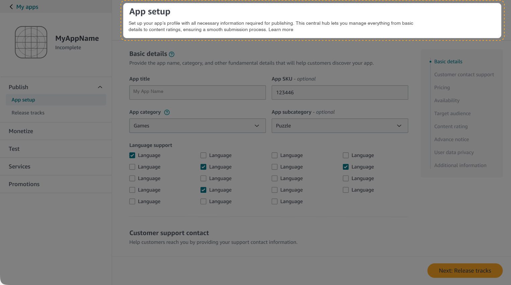
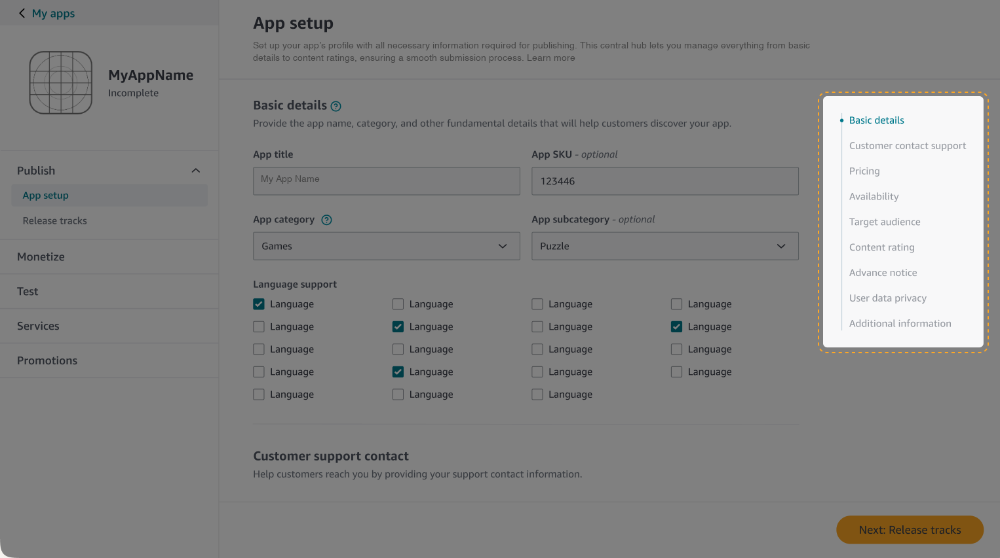
Outcome 2 · Set up and manage information, quickly and with confidence
This answers the limits on platform-specific tracks and version history. The design response is simplified track creation, and structured configuration workflows for release tracks with role-based permissions, so that designated team members can own independent tasks.
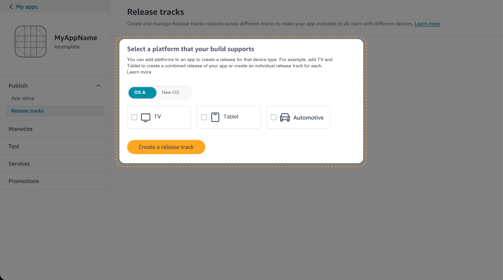
Track creation becomes two choices: pick the platform, then pick the device types it should cover. The explanation on the page offers both shapes of release, a combined track or one per device type, so the developer’s release structure matches how their team works. This closes the first limitation.
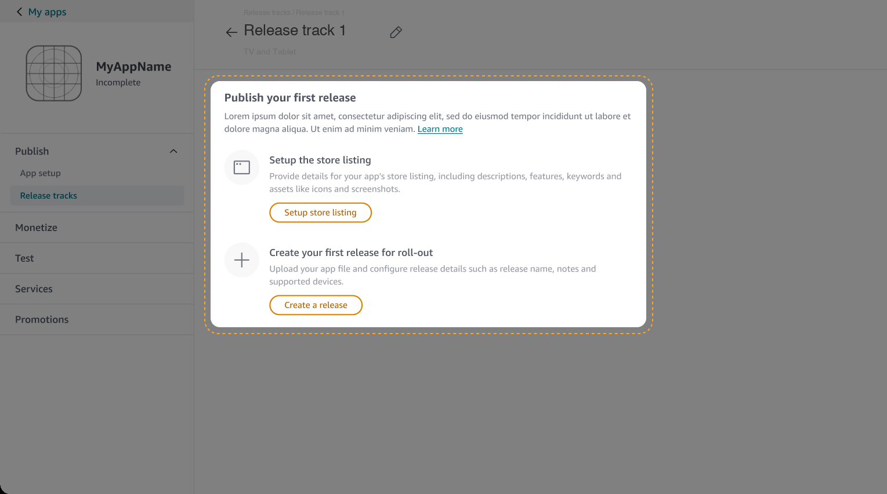
Each track is now an object with a name that can be edited, a line stating which devices it covers, and an empty state that offers two independent paths: set up the store listing and create your first release for roll-out. Store content and release are separate, in two places inside the track. This is the same separation I had made at the level of the whole app, now applied to each track.
The track page also carries a release summary (latest release, devices targeted, binary files), tabs that split Releases from Store Listings, and a release history. History was the fourth limitation: a list of what shipped, when and how, available for audit and troubleshooting.
The full Phase 2 screens
The screens above are the guided walkthrough. These are the working screens underneath it.
A section index that follows you
Across the nine sections of App setup (basic details, customer contact support, pricing, availability, target audience, content rating, advance notice, user data privacy and additional information), the index on the right highlights the section currently in view as the form scrolls. It works as a map and a progress marker at once: a developer always knows where they are, and can jump anywhere without scrolling past everything between.
Tracks you can combine or split
On the track-creation screen, the platform toggle changes the device types on offer, and ticking several creates a combined track while creating one per device type keeps them separate. The explanation on the page names both options, so the structure follows the developer’s own release pattern instead of ours.
A release is its own page
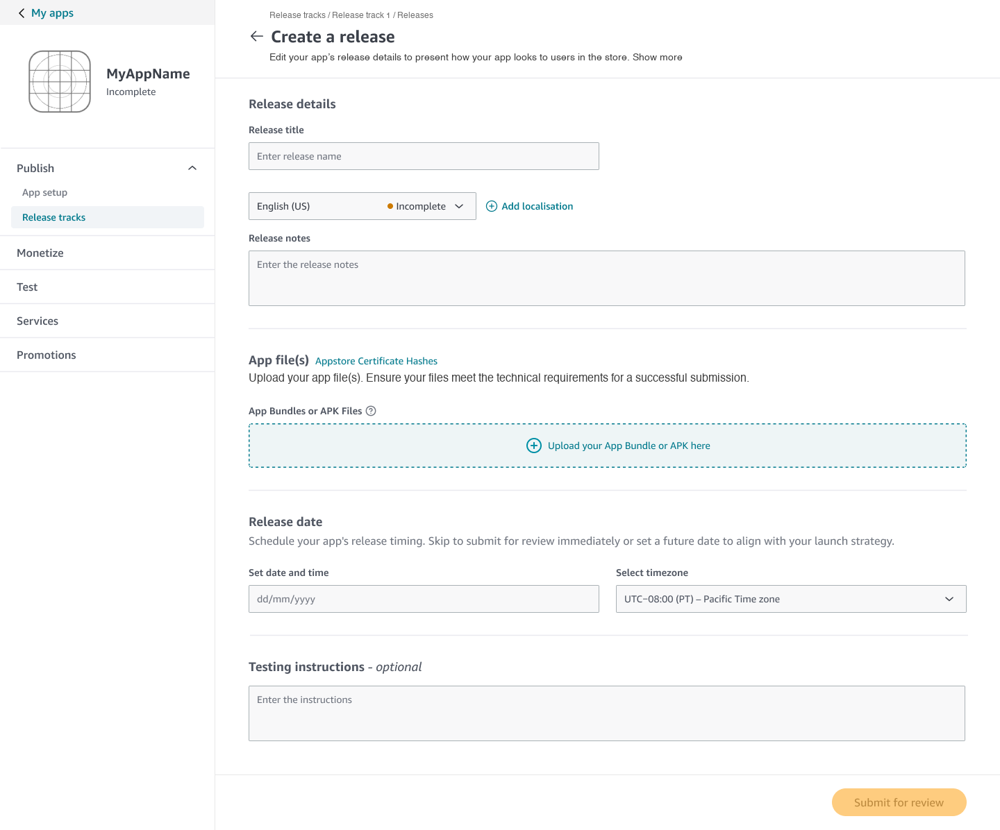
Creating a release collects what belongs to a version: a release title, release notes by language (with a completeness marker for each language, and an Add localisation action), the app files, the release date and testing instructions. Release notes now live with the release instead of the app, which is where the research said they belonged.
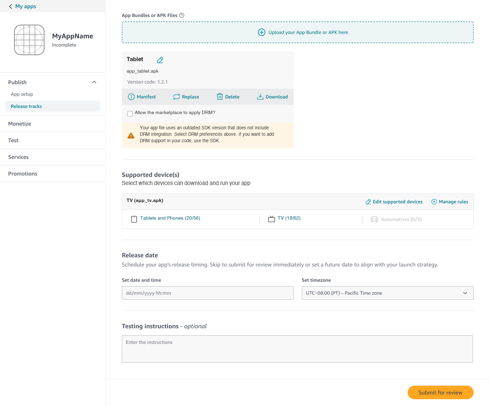
Devices are chosen per uploaded file, shown as selected / total for each family (for example, 20 of 56 tablets and phones, 18 of 62 TVs). A family that doesn’t apply, such as a group with none of three selected, is greyed out. The counts make the size of a choice visible before it is made.
A track that knows its own state
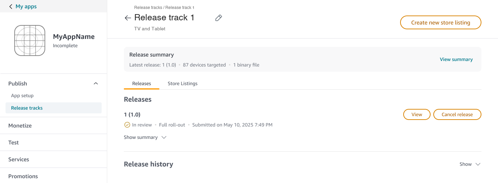
The track page opens with a one-line summary (latest release, devices targeted, binary files), then separates Releases from Store Listings in tabs. A release shows its state (In review), its rollout (Full roll-out) and when it was submitted, with View and Cancel release actions. Release history sits beneath, and Create new store listing at the top makes listings an object a track can have more than one of.
Introducing staged rollout where developers look
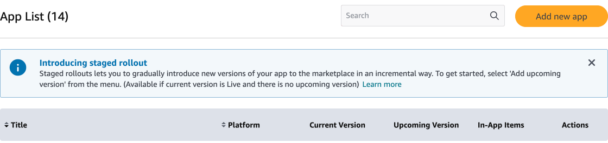
Finding 5 was that staged rollout could not be found. Alongside the roll-out dialog in the release flow, the app list carries a dismissible banner: Introducing staged rollout. It explains in a sentence what the feature does, says to start from Add upcoming version in the menu, and states the prerequisite: available when the current version is live and there is no upcoming version. The feature is announced on the page developers already open, and its rule is stated before they hit it.
Phase 3: rebuilding the console around the developer
Phases 1 and 2 reorganised what a developer does inside an app. Phase 3 was a complete overhaul of the developer experience platform: new structure, new guidance and a new design system. It was in progress when I left, so it is shown as design, not as shipped.
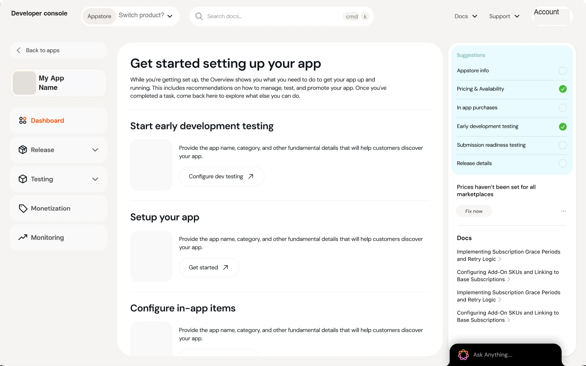
A console organised by jobs, not forms
The left navigation names the work a developer does: Dashboard, Release, Testing, Monetization and Monitoring. The old console had sections for forms; this one has areas for outcomes. Monitoring is new as a first-class area, a place to watch an app after it ships, not only to get it there.
An overview that tells you what to do next
The dashboard opens with a plain instruction, Get started setting up your app, and a sequence of short blocks: start early development testing, set up your app, configure in-app items. Each has one clear action. The point of the page is to answer “what should I do now?” without making a developer read a menu.
A suggestions panel on the right turns that into a checklist: store info, pricing and availability, in-app purchases, early development testing, submission-readiness testing and release details, with completed items ticked. Below it, a specific alert (Prices haven’t been set for all marketplaces) comes with a Fix now action, so a problem is something to resolve in one step instead of discover in review.
Help where the work is
The panel also lists relevant documentation beside the task, a docs search sits in the header, and an Ask Anything assistant is always at hand. Guidance is part of the screen, not a link out of it. This continues the principle from Phase 2: show developers where they are, and what is missing, without making them scroll for it.
Explorations in the new system
These explorations show the structure running in the new design system. Numbers on the screens are sample data.
An app at a glance
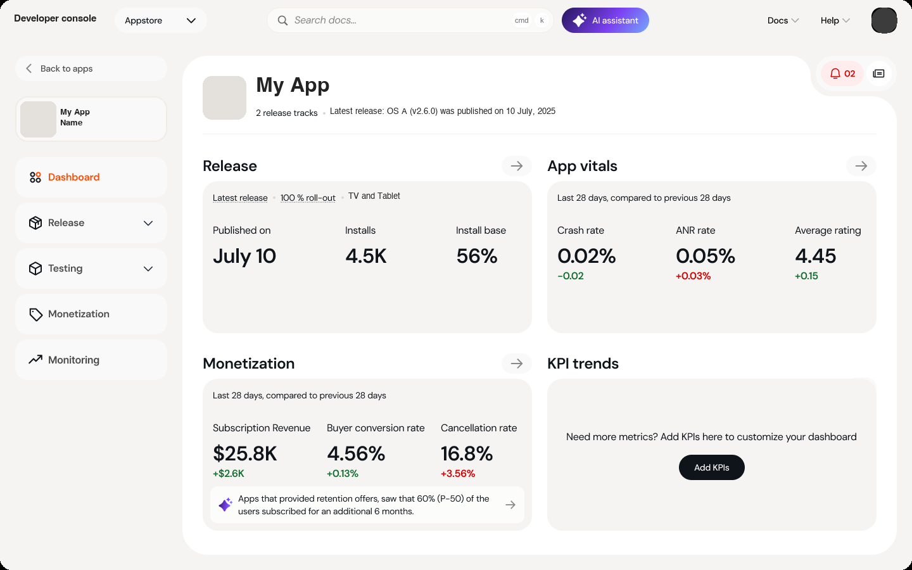
The app dashboard turns the old list of sections into a summary of how the app is doing. Release shows the latest release, its roll-out percentage and devices, the publish date, installs and install base. App vitals shows crash rate, ANR rate and average rating for the last 28 days against the previous 28, with green and red changes. Monetization shows subscription revenue, buyer conversion and cancellation, with a line of insight beneath. KPI trends starts empty, with a prompt to add the metrics a developer cares about.
The release module is the same idea as Phase 1’s roll-out column, now a headline on the first page: whether the latest release is at 100% is visible without opening anything.
Setup, with urgent work beside it
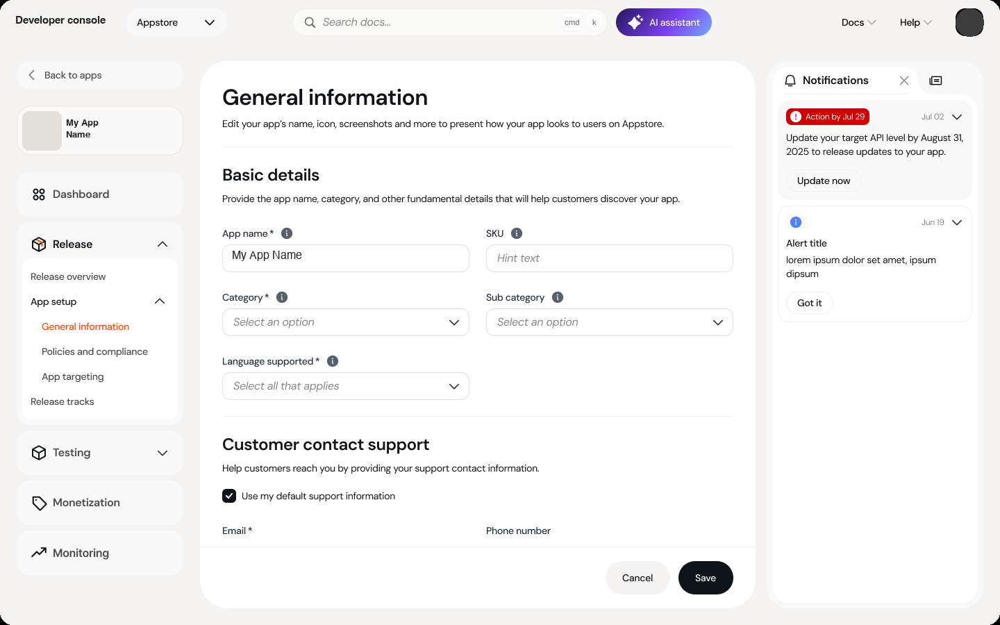
The app’s setup sits under Release, which expands into Release overview, App setup (general information, policies and compliance, app targeting) and Release tracks, the structure from Phases 1 and 2 carried into the new navigation. The form itself is simple: required fields marked, info icons for guidance, and a clear Cancel and Save.
Beside the form, a notifications panel puts urgent items where the developer is already working. An item with a deadline, such as an API level that must be updated before updates can be released, shows the date and a direct Update now action. The panel can collapse to a small count chip, which gives the form its full width back.
All apps, one place
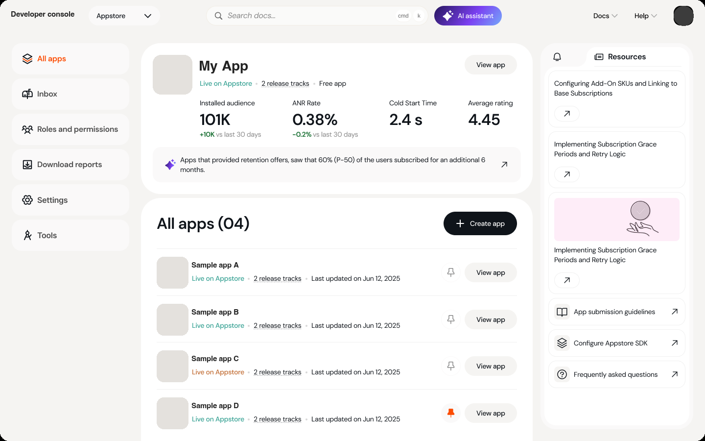
The home screen treats a developer with several apps as the norm. A pinned app is summarised at the top (installed audience, ANR rate, cold-start time and rating, each against the last 30 days), and below it every app is listed with its status, number of release tracks, last update and a pin control. The left navigation holds account-level tools: inbox, roles and permissions, reports, settings and tools. Roles and permissions fit the Phase 2 idea of team members owning separate tasks.
A new design system, matched to the devices
The visual language was rebuilt as a new design system whose style matches the marketplace’s own devices, so a developer moves from the hardware they build for to the console they build in without a visual break. Rounded, softly separated cards replace the dense, dark-header console, and a product switcher at the top moves between the marketplace’s products.
The design system was as much a product decision as a visual one. Phases 1 and 2 had shown how much of the old console’s friction came from one-off patterns. Building the platform on shared components meant the structure, the guidance and the look could be consistent from the first screen to the last.
NEEDS INPUT — which Phase 3 screens beyond the dashboard (release tracks, testing, monetization, monitoring) you can share, and which parts of the design system you led (components, tokens, guidelines).
What happened
Parallel submission shipped. Developers could submit binaries for different operating systems independently. A developer who wanted to ship a build for one OS could do so without waiting on a build for the other.
The restructured structure shipped. The restructured information hierarchy, with the four-step flow reduced to store details and a production release.
Phase 2 shipped. Tracks extended to device-level releases, each with its own store listing, plus release history and a guided app setup.
Phase 3 was in progress. A complete overhaul of the developer experience platform, with a new design system matching the marketplace’s devices, was still underway when I left.
Review wait time
Review wait time gradually dropped from about seven days to about two days. The research baseline had put the wait at around seven days, and the shift happened over time rather than overnight.
What partners told us
- Strategic partners were happy that they could submit multiple binaries at once, or while another was still in review.
- That let them match the release timing they had on other platforms, closing the roughly two-week lag found in the research.
- They found the restructured flow easier to use and quicker to learn because it matched the console conventions they already knew.
- The features were extended to smaller developers, who gained the same ability to handle multiple binaries across operating systems.
Partner feedback above is paraphrased from the project owner’s account of the response. It is not a verbatim quote.
Before and after
| Before | After |
|---|---|
| One submission at a time; others wait on review | Independent submissions per OS, in parallel |
| Four sequential steps: upload, target, store settings, review | Two steps: store details and production release |
| Store content and release tied together | Release editable on its own; marketing content managed separately |
| Staged rollout hard to find | Partial or full release chosen up front |
| Review wait ~7 days | Review wait ~2 days (gradual) |
Timing. Phases 1 and 2 were released in Q2 2025, and the release met the launch of the new-OS devices, the milestone this project was blocking.
What I’d carry forward
Treat the brief as a hypothesis. “Allow parallel uploads” was a reasonable request and the wrong problem. The research made it visible; the flow map made it undeniable. Learning to ask “what model does this feature assume?” before designing the feature is the habit I’d most want to keep.
Design for the most valuable users without forgetting the rest. Focusing research on strategic partners made sense given their revenue weight. The risk is a console that fits their workflow and overwhelms a solo developer. Progressive disclosure and a non-linear first-time flow were the guardrails.
Every capability has a second user. The reviewer’s needs weren’t a footnote. They were a constraint on how many parallel lanes were reasonable at launch, and why the first lanes followed OS boundaries.
Let constraints shape the sequence, not just the scope. The engineering objection to a full IA restructure could have stalled the work. Treating it as a design input produced a better plan: ship what the back end can carry now, and hold the deeper shift for the redesign.
Familiar beats novel. The card sort pointed to a competitor’s console as the structure developers already trusted. Designing toward that familiarity cut the learning curve, which the partners noticed.
NEEDS INPUT — what would you do differently, and what surprised you?
Source materials
Parallel Binary Submission BRD · developer research plan · developer console user-flow maps · earlier app submission study · staged rollout survey · Phase 2 and Phase 3 design screens. Company, device, OS and partner names have been anonymised.
Looking ahead
The BRD closes with a longer-term vision. Tracks could be of two kinds: production and experiment. In the experiment tracks a developer could test store-listing changes (logos, descriptions, screenshots) or app-feature changes (UI, algorithms) across control and treatment groups, split by device type, family and region. After watching retention, engagement and conversion, they could promote the winning variant to production with a staged rollout.
This was explicitly a future direction, not part of the first release. I include it because it shows why the track model was worth getting right: it is the foundation that experimentation, staged rollout and independent releases can all sit on.
The performance numbers in the BRD’s experiment example are illustrative and are not reported here as results.
What is still needed
- The three “before” screens that arrived inline (review, status, update), if you want them embedded.
- More Phase 3 screens beyond the dashboard, and your design-system work.
- Which BRD rules shipped at launch (version-code validation, exclusive device targeting, a cap on tracks).
- Approval to redraw the two flow maps, anonymised.
- Your reflection: what you would do differently and what surprised you.